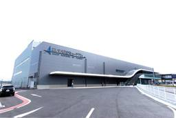
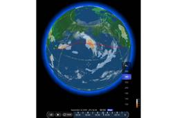
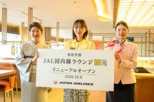
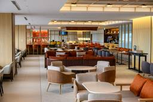
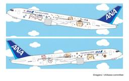
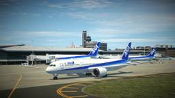
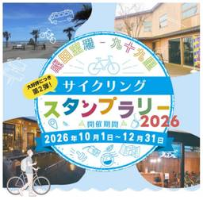
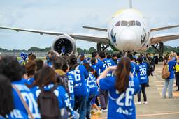
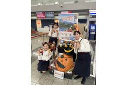

AIRLINE web -月刊エアライン×航空旅行-
https://airline.ikaros.jp
飛行機の運航を支える最前線、魅力あふれる空の旅のサービス、飛ぶためのテクノロジーやエアライン・空港の最新ビジネス動向、飛来機の撮影＆投稿など趣味として楽しむ航空の世界まで幅広く情報をお届けします。
フィード

あいち航空ミュージアムでスペースジェット搬入イベント、観覧者を募集
AIRLINE web -月刊エアライン×航空旅行-
愛知県は、2026年6月から2027年1月末までリニューアル工事のため休館しているあいち航空ミュージアムにおいて、工事期間中の特別企画として「あいち航空ミュージアムSJ搬入イベント」を開催する。展示機であるスペースジェ […]The post あいち航空ミュージアムでスペースジェット搬入イベント、観覧者を募集 first appeared on AIRLINE web -月刊エアライン×航空旅行-.
1日前
ACIが日本の空港インフラ投資を分析、「2056年までに800億米ドルの投資が必要」
AIRLINE web -月刊エアライン×航空旅行-
Airports Council International Asia-Pacific & Middle East 事務局長のステファノ・バロンチ（Stefano Baronci）氏 Airports Cou […]The post ACIが日本の空港インフラ投資を分析、「2056年までに800億米ドルの投資が必要」 first appeared on AIRLINE web -月刊エアライン×航空旅行-.
1日前
KLMオランダ航空が創立107周年。記念のデルフトブルー・ミニチュアハウスはゼーラント州のワイナリー
AIRLINE web -月刊エアライン×航空旅行-
KLMオランダ航空が、107番目のデルフトブルー・ミニチュアハウスを発表。 KLMオランダ航空は2026年で創立107周年を迎えた。同社は毎年10月7日の創業記念日にちなみ、オランダにゆかりのある特別な建物をかたどった […]The post KLMオランダ航空が創立107周年。記念のデルフトブルー・ミニチュアハウスはゼーラント州のワイナリー first appeared on AIRLINE web -月刊エアライン×航空旅行-.
1日前
JALとANA、航空関連企業による教育プログラムを神戸高専のカリキュラムに新設
AIRLINE web -月刊エアライン×航空旅行-
神戸市立工業高等専門学校（神戸高専）とJAL、ANAは、航空関連企業であるIHI、川崎重工業、ジャムコ、SUBARU、三菱重工業と共同で開発した教育プログラム「航空産業人財育成プログラム」を、同校の「機械システム工学科 […]The post JALとANA、航空関連企業による教育プログラムを神戸高専のカリキュラムに新設 first appeared on AIRLINE web -月刊エアライン×航空旅行-.
1日前
JAL＆NXグループ、アジア域内および北米＝アジア間の輸送提携を開始
AIRLINE web -月刊エアライン×航空旅行-
JAL、NXグループ JALとNIPPON EXPRESSホールディングス（NXグループ）は、JALがアトラス航空やカリッタエア、カーゴルクスといったパートナーとの連携により運航する貨物専用機747Fを活用したアジア域 […]The post JAL＆NXグループ、アジア域内および北米＝アジア間の輸送提携を開始 first appeared on AIRLINE web -月刊エアライン×航空旅行-.
2日前

Starlinkを活用しコクピットの通信環境を高度化、ZIPAIRがAI乱気流予測を導入
AIRLINE web -月刊エアライン×航空旅行-
ZIPAIR Tokyo、BlueWX、エムティーアイは、BlueWXの「AI乱気流予測」をエムティーアイの航空気象サービス「3DARVI」に搭載し、10月8日よりZIPAIRの運航便での利用を開始した。 本取り組み […]The post Starlinkを活用しコクピットの通信環境を高度化、ZIPAIRがAI乱気流予測を導入 first appeared on AIRLINE web -月刊エアライン×航空旅行-.
2日前
ベトナム航空、A350-900を5機導入に向けエアバスと覚書を締結
AIRLINE web -月刊エアライン×航空旅行-
ベトナム航空とエアバス、覚書締結の様子。 ベトナム航空は、フランス共和国におけるベトナム共産党中央委員会書記長兼国家主席トー・ラム氏およびベトナム政府高官代表団の公式訪問に際し、エアバスと5機のA350-900導入に関 […]The post ベトナム航空、A350-900を5機導入に向けエアバスと覚書を締結 first appeared on AIRLINE web -月刊エアライン×航空旅行-.
2日前
J-AIR創立30周年記念「大阪国際空港体験フライト 2026」。地元の小・中・高校生を対象に募集
AIRLINE web -月刊エアライン×航空旅行-
関西エアポートと、ジェイエア（J-AIR）は、周辺地域の住民への感謝を込めて、大阪国際空港周辺都市に在住の小学生・中学生・高校生を対象とした「大阪国際空港体験フライト 2026 ～J-AIR 創立30周年記念～」を20 […]The post J-AIR創立30周年記念「大阪国際空港体験フライト 2026」。地元の小・中・高校生を対象に募集 first appeared on AIRLINE web -月刊エアライン×航空旅行-.
2日前

JAL、羽田空港の国内線ラウンジを刷新。井桁弘恵さんがラウンジの新メニューに舌鼓
AIRLINE web -月刊エアライン×航空旅行-
JAL新ラウンジのお披露目イベントに井桁弘恵さんが登場。 羽田空港第1ターミナル北ウイングのJAL国内線ラウンジおよび専用保安検査場が、10月8日にリニューアルオープンする。これに先立って、10月6日にお披露目イベント […]The post JAL、羽田空港の国内線ラウンジを刷新。井桁弘恵さんがラウンジの新メニューに舌鼓 first appeared on AIRLINE web -月刊エアライン×航空旅行-.
3日前
第1ターミナル2階「羽田スタースイーツ」で、4ブランドによる期間限定販売
AIRLINE web -月刊エアライン×航空旅行-
「羽田スタースイーツ」に期間限定で登場する4ブランド。 日本空港ビルディングは、羽田空港第1ターミナル2階マーケットプレイス内の「羽田スタースイーツ」にて、4ブランドによる期間限定催事を開催する。期間は10月8日から2 […]The post 第1ターミナル2階「羽田スタースイーツ」で、4ブランドによる期間限定販売 first appeared on AIRLINE web -月刊エアライン×航空旅行-.
4日前

JAL、羽田空港の国内線新ラウンジを10月8日オープン、ラウンジ内各エリアを紹介
AIRLINE web -月刊エアライン×航空旅行-
JALが羽田空港第1ターミナル北ウイングのラウンジをリニューアル。 JALは、羽田空港第1ターミナル北ウイングの国内線ラウンジおよび専用保安検査場を10月8日にリニューアルオープンする。 全体コンセプトは「New A […]The post JAL、羽田空港の国内線新ラウンジを10月8日オープン、ラウンジ内各エリアを紹介 first appeared on AIRLINE web -月刊エアライン×航空旅行-.
4日前

ANA「ちいかわジェット」が10月19日に就航、初便は羽田＝長崎線
AIRLINE web -月刊エアライン×航空旅行-
ANA「ちいかわジェット」。 ANAと「ちいかわ」のタイアップによる特別デザイン機「ちいかわジェット」の就航日が発表された。10月19日より国内線定期便としての就航を開始し、初便は羽田発長崎行きのANA661便（08時 […]The post ANA「ちいかわジェット」が10月19日に就航、初便は羽田＝長崎線 first appeared on AIRLINE web -月刊エアライン×航空旅行-.
4日前

FLYING HONUも登場する「ぼく管エアポートヒーロー成田×ANA」、12月10日発売
AIRLINE web -月刊エアライン×航空旅行-
「ぼく管エアポートヒーロー成田×ANA」 Lichterfelde project ©2026 TechnoBrain CO., LTD. ©2026 Sonic Powered Co.,Ltd ソ […]The post FLYING HONUも登場する「ぼく管エアポートヒーロー成田×ANA」、12月10日発売 first appeared on AIRLINE web -月刊エアライン×航空旅行-.
5日前
ソラシドエア、熊本県菊池市と共同で観光プロモーション開始。2名のCAが菊池市を巡りSNSで魅力を発信
AIRLINE web -月刊エアライン×航空旅行-
ソラシドエアの2名の客室乗務員が菊池市を巡り、プロモーション動画で魅力を発信。 ソラシドエアと熊本県菊池市は、両者が締結した包括連携協定に基づき、関東圏をはじめとする全国からの誘客と地域活性化を目指した共同観光プロモー […]The post ソラシドエア、熊本県菊池市と共同で観光プロモーション開始。2名のCAが菊池市を巡りSNSで魅力を発信 first appeared on AIRLINE web -月刊エアライン×航空旅行-.
5日前

九十九里でデジタルスタンプラリー第2弾、成田空港などが連携
AIRLINE web -月刊エアライン×航空旅行-
九十九里でデジタルスタンプラリー第2弾。 モンベルフレンドエリア九十九里連絡協議会（横芝光町、芝山町、山武市）と成田国際空港（NAA）、千葉大学、地元サイクリストは、交流人口の拡大と地域活性化を目的に、産学官連携による […]The post 九十九里でデジタルスタンプラリー第2弾、成田空港などが連携 first appeared on AIRLINE web -月刊エアライン×航空旅行-.
5日前
JALUX、「JAL SELECTION 塩キャラメルポップコーン」発売 HillValleyとコラボ
AIRLINE web -月刊エアライン×航空旅行-
JAL SELECTION 塩キャラメルポップコーン JALUXは、JALオリジナルグルメブランド「JAL SELECTION」から、グルメポップコーン専門店「HillValley」とコラボレーションした「JAL SE […]The post JALUX、「JAL SELECTION 塩キャラメルポップコーン」発売 HillValleyとコラボ first appeared on AIRLINE web -月刊エアライン×航空旅行-.
5日前
JAL国際線で4番目の歴史、東京＝バンコク線が就航70周年。機材はDC-6Bから777-300ERへ
AIRLINE web -月刊エアライン×航空旅行-
JALは1956年10月4日、東京＝バンコク路線を開設し、今年2026年で就航70周年を迎えた。その就航を記念したイベントが羽田空港から出発するJL31便バンコク行き（10時40分発）の出発前に、第3ターミナル114番 […]The post JAL国際線で4番目の歴史、東京＝バンコク線が就航70周年。機材はDC-6Bから777-300ERへ first appeared on AIRLINE web -月刊エアライン×航空旅行-.
6日前

ピカチュウジェットNHとバトル！ 成田空港で恒例の綱引き大会
AIRLINE web -月刊エアライン×航空旅行-
成田空港で、毎年恒例の「ジェット機と綱引き」イベントが開催された。 成田国際空港（NAA）は10月4日、「空の日」および「空の旬間」の記念事業として「成田空港 空の日フェスティバル2026」を開催。毎年恒例の「ジェット […]The post ピカチュウジェットNHとバトル！ 成田空港で恒例の綱引き大会 first appeared on AIRLINE web -月刊エアライン×航空旅行-.
6日前

JAL、全国47空港で「JAL DE パンプキンキャンペーン」を開催
AIRLINE web -月刊エアライン×航空旅行-
「JAL DE パンプキンキャンペーン2026」イメージ。 JALは、北海道佐呂間町のカボチャを使った「JAL DE パンプキンキャンペーン」を10月1日から国内47空港で開始した。実施期間は10月31日までの1か月間 […]The post JAL、全国47空港で「JAL DE パンプキンキャンペーン」を開催 first appeared on AIRLINE web -月刊エアライン×航空旅行-.
6日前
フェデックス、パンダ2頭を成都からアトランタへ輸送
AIRLINE web -月刊エアライン×航空旅行-
フェデックス、パンダ2頭を成都からアトランタへ専用便で輸送。 フェデックスは9月28日、ジャイアントパンダのピンピンとフーシュアンを中国・成都から米国ジョージア州アトランタまで無事輸送したと発表した。 同社は、米国の […]The post フェデックス、パンダ2頭を成都からアトランタへ輸送 first appeared on AIRLINE web -月刊エアライン×航空旅行-.
7日前
ANAが2027年度入社の内定式開催、平澤社長が「安全の担い手」としての自覚呼びかけ
AIRLINE web -月刊エアライン×航空旅行-
ANAが、2027年入社の内定式を開催。 ANAは10月3日、2027年度入社内定式を実施した。2026年の内定式はANA Blue Baseを会場に、職種別に2日に分けて実施される。10月3日の出席者はグローバルスタ […]The post ANAが2027年度入社の内定式開催、平澤社長が「安全の担い手」としての自覚呼びかけ first appeared on AIRLINE web -月刊エアライン×航空旅行-.
7日前
成田空港第1ターミナルにドッグウェアブランド「monchéri POPUP STORE」が期間限定オープン
AIRLINE web -月刊エアライン×航空旅行-
「monchéri POPUP STORE」。 10月3日から11月2日までの1か月間、成田空港第1ターミナル本館4階AIRPORT MALL内にドッグウェアブランドの「monchéri POPUP STORE」が期間 […]The post 成田空港第1ターミナルにドッグウェアブランド「monchéri POPUP STORE」が期間限定オープン first appeared on AIRLINE web -月刊エアライン×航空旅行-.
8日前
AIRDO、10月機内販売に2027年ベア・ドゥカレンダーなど登場
AIRLINE web -月刊エアライン×航空旅行-
「ベア・ドゥ卓上カレンダー＆オリジナルシールセット」。 AIRDOは10月1日から、ベア・ドゥをデザインした2027年卓上カレンダーと、北海道広尾町産の鮭とばを収めたミニチュア鮭箱の機内販売を開始した。 「ベア・ドゥ […]The post AIRDO、10月機内販売に2027年ベア・ドゥカレンダーなど登場 first appeared on AIRLINE web -月刊エアライン×航空旅行-.
8日前
スターフライヤー、機内販売で“小倉コーラ”など新商品
AIRLINE web -月刊エアライン×航空旅行-
シャチと季節のフライトタグ＜秋冬＞ アクリルチャーム付／アクリルキーリングセット／オリジナルアロマ リップバーム／オリジナルスープセット。 スターフライヤーは10月1日から新たに3商品、11月1日から2商品を機内販売に […]The post スターフライヤー、機内販売で“小倉コーラ”など新商品 first appeared on AIRLINE web -月刊エアライン×航空旅行-.
8日前

ANAシアトル支店長が語る羽田＝シアトル線のいま。路線動向から旅の過ごし方まで
AIRLINE web -月刊エアライン×航空旅行-
全日本空輸株式会社 シアトル支店長の草野 博氏に路線の現状や、おすすめのシアトル旅など現地の魅力を訊いた。 2012年7月25日にANAの成田＝シアトル線が就航してから約14年。成田発着と羽田発着の切り替えを経て、現在 […]The post ANAシアトル支店長が語る羽田＝シアトル線のいま。路線動向から旅の過ごし方まで first appeared on AIRLINE web -月刊エアライン×航空旅行-.
8日前
ZIPAIR サステナブルパートナー機のデカール貼りに密着。貼り付けは約半日で完了
AIRLINE web -月刊エアライン×航空旅行-
ZIPAIRの特別デザイン機のデカール貼付作業を取材。 ZIPAIRは9月28日に、脱炭素化に共に取り組むパートナーのロゴをあしらった特別デザイン機を就航した。 この機体、ボーイング787-8（登録記号：JA828J […]The post ZIPAIR サステナブルパートナー機のデカール貼りに密着。貼り付けは約半日で完了 first appeared on AIRLINE web -月刊エアライン×航空旅行-.
10日前
JAL Agriport、「DINING PORT 御料鶴」で熊本応援プロジェクトスタート。くまモンが初日に駆けつけPR
AIRLINE web -月刊エアライン×航空旅行-
JAL Agriportは、同社が運営を行なう古民家風レストラン「DINING PORT 御料鶴」で「食からつながる、熊本応援プロジェクト」を10月31日まで開催中だ。JALグループの「JAL九州ふっこう応援キャンペー […]The post JAL Agriport、「DINING PORT 御料鶴」で熊本応援プロジェクトスタート。くまモンが初日に駆けつけPR first appeared on AIRLINE web -月刊エアライン×航空旅行-.
10日前
JAL、JGCプレミアの達成条件からJGC入会を撤廃、名称を「JMBプレミア」へ
AIRLINE web -月刊エアライン×航空旅行-
JALは9月30日、FLY ONプログラムにおけるステイタス達成条件およびサービス内容の一部変更を発表した。 適用開始日は、達成条件の変更が2027年1月1日搭乗分から、特典内容の変更が2028年度FLY ONステイ […]The post JAL、JGCプレミアの達成条件からJGC入会を撤廃、名称を「JMBプレミア」へ first appeared on AIRLINE web -月刊エアライン×航空旅行-.
10日前
HAC、食品ロス削減につながる「葡萄と林檎のジュース」、5回目の機内販売
AIRLINE web -月刊エアライン×航空旅行-
「葡萄と林檎のジュース」の機内販売は今回で5回目。 北海道エアシステム（HAC）は、農地所有適格法人AGRISCAPEが生産した「葡萄と林檎のジュース」の機内販売を10月5日より開始する。購入特典として、農園の食用豚の […]The post HAC、食品ロス削減につながる「葡萄と林檎のジュース」、5回目の機内販売 first appeared on AIRLINE web -月刊エアライン×航空旅行-.
11日前
神戸空港開港20周年記念で10組20名に神戸空港発着の旅
AIRLINE web -月刊エアライン×航空旅行-
神戸空港開港20周年を記念した「10組20名さまに神戸空港からの旅をプレゼント！」 関西エアポート神戸は、神戸空港の開港20周年を記念し、「神戸空港 開港20周年記念 10組20名さまに神戸空港からの旅をプレゼント！」 […]The post 神戸空港開港20周年記念で10組20名に神戸空港発着の旅 first appeared on AIRLINE web -月刊エアライン×航空旅行-.
11日前
滑走路や駐機エリアを一望できる絶景ラウンジ。羽田空港、新カードラウンジ「Lounge Us」が10月1日オープン
AIRLINE web -月刊エアライン×航空旅行-
羽田空港に新カードラウンジ「Lounge Us」が10月1日にオープンする。 日本空港ビルデングは10月1日、羽田空港第2ターミナル4階の国内線出発ゲートエリアに、新カードラウンジ「Lounge Us（ラウンジ ユーズ […]The post 滑走路や駐機エリアを一望できる絶景ラウンジ。羽田空港、新カードラウンジ「Lounge Us」が10月1日オープン first appeared on AIRLINE web -月刊エアライン×航空旅行-.
11日前
ANAスーパーフライヤーズカード制度の再変更内容、年間利用額やラウンジ利用ルールなど新制度の背景
AIRLINE web -月刊エアライン×航空旅行-
ANAは9月29日、ANAスーパーフライヤーズカード（SFC）の新たな制度を発表した。4月にラウンジの混雑緩和に対応するために打ち出した新制度に対して、利用者の声を受けて条件などを再変更したものとなる。 1986年に […]The post ANAスーパーフライヤーズカード制度の再変更内容、年間利用額やラウンジ利用ルールなど新制度の背景 first appeared on AIRLINE web -月刊エアライン×航空旅行-.
11日前